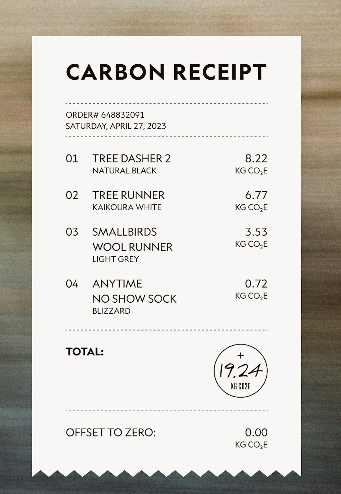
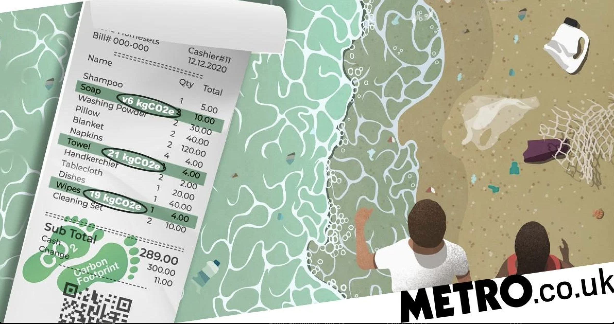
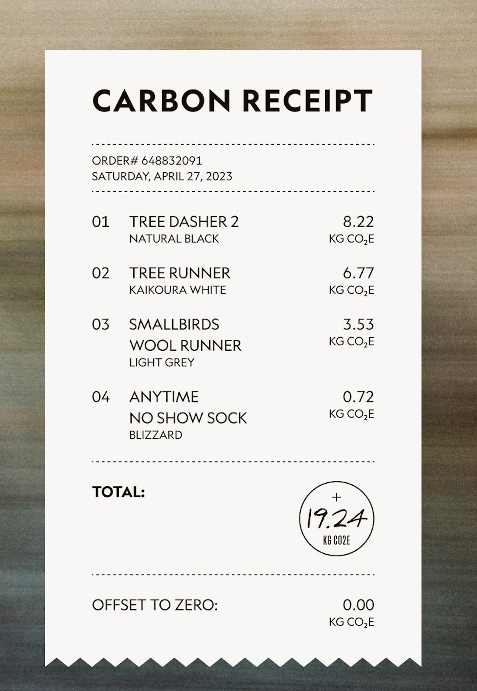
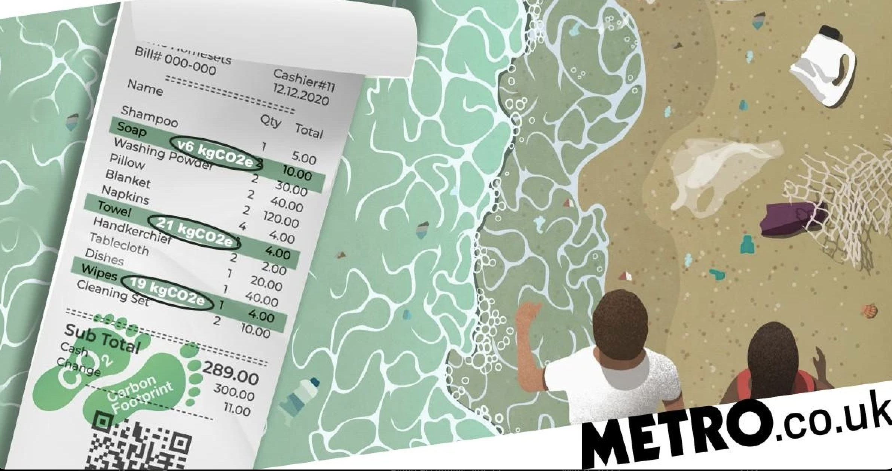

🧾 Annual Receipt Footprint Calculator Powered by Platen
CO2 emissions: 0
Plastic bags: 0
Plastic straws: 0
Disposable coffee cups with lids: 0
Distance driven in a car: 0
Bottled water: 0
Lightbulb (60 watt) usage: 0 hours
Plastic cutlery: 0
👣 Why Receipt Footprint Matters
Every year, billions of receipts are generated worldwide, significantly contributing to the consumption of natural resources, waste production, and greenhouse gas emissions. Understanding your receipt footprint is crucial for making environmentally conscious decisions that promote sustainability and minimize your ecological impact.
Paper receipts are often overlooked when considering environmental concerns. However, they account for substantial deforestation, water usage, and energy consumption during the production process. Additionally, the chemicals used in printing, such as BPA and BPS, can have adverse effects on human health and the environment. With the immense quantity of receipts generated daily, these factors combined contribute to a substantial environmental burden.
By comprehending the magnitude of your receipt footprint, you can actively work to reduce waste and support a greener environment. Adopting digital alternatives, such as centralized digital receipt solutions, can help minimize the environmental consequences associated with paper receipts. These eco-friendly alternatives not only reduce the demand for paper and energy but also eliminate the need for harmful chemicals in the printing process.
Digital receipt solutions like Platen offer added benefits in terms of personal finance management, convenience, and security. They provide users with an organized platform to track expenses, budget efficiently, and gain valuable insights into their spending habits. Additionally, digital receipts can aid in tax optimization and reimbursement claims while ensuring data privacy and security.
Being aware of your receipt footprint empowers you to make environmentally responsible choices and fosters a sense of accountability towards preserving the environment for future generations. Encouraging others to adopt eco-friendly practices and spreading awareness about the importance of receipt footprints can amplify the positive impact on the environment. By raising awareness and taking collective action, we can work towards reducing waste, conserving resources, and mitigating climate change.
Together with Platen, we can create a more sustainable world where every individual is conscious of their ecological impact and actively contributes to protecting our planet for generations to come.
 



🙋 Frequently Asked Questions
How do paper receipts contribute to deforestation?
Paper receipts are often made from virgin paper, which requires the cutting down of trees for pulp production. This process leads to deforestation, which has a negative impact on ecosystems, contributes to climate change, and results in the loss of natural habitats for various species. By reducing the use of paper receipts and adopting digital alternatives, we can help to minimize deforestation and its associated consequences.
What are the environmental impacts of producing paper receipts?
The production of paper receipts involves several processes that negatively impact the environment. These include the consumption of water and energy, the emission of greenhouse gases, and the use of harmful chemicals such as BPA and BPS in thermal paper coatings. These chemicals can contaminate water sources and pose health risks to humans and wildlife. By opting for digital receipt solutions, we can significantly reduce the environmental impact associated with paper receipt production.
How do paper receipts contribute to waste generation?
Paper receipts contribute to waste generation as they are often discarded shortly after being received. Many receipts are not recyclable due to their chemical coatings, which means they end up in landfills, further exacerbating waste management issues. Digital receipts help to minimize waste by eliminating the need for physical receipts and reducing the burden on landfills.
Are there any health risks associated with paper receipts?
Paper receipts coated with thermal paper often contain chemicals such as BPA and BPS, which have been linked to various health issues, including hormone disruption, cancer, and developmental problems. By using digital receipts, we can reduce exposure to these chemicals and minimize potential health risks.
How can digital receipts help in personal finance management?
Digital receipts offer numerous advantages for personal finance management. They provide an organized platform to track expenses, create budgets, and gain valuable insights into spending habits. Digital receipts can also simplify tax filing and reimbursement claims by storing all relevant information in one centralized location.
Is it secure to use digital receipts?
Digital receipt solutions like Platen prioritize data privacy and security. They use encryption and other security measures to protect sensitive personal and financial information from unauthorized access. By opting for reputable digital receipt platforms, users can ensure their data remains secure and confidential.
How can I encourage others to adopt eco-friendly alternatives to paper receipts?
Raising awareness about the environmental impact of paper receipts is key to encouraging the adoption of eco-friendly alternatives. Share facts, figures, and relatable comparisons on social media, participate in campaigns or workshops, and promote the benefits of digital receipts to friends, family, and colleagues. By spreading the word, you can help to create a positive change and contribute to a greener future.
Can I recycle paper receipts?
The recyclability of paper receipts depends on the type of paper they are made from. Many paper receipts are printed on thermal paper, which is coated with chemicals like BPA and BPS. Unfortunately, these chemicals make thermal paper receipts non-recyclable, as they can contaminate the recycling process and other recyclable materials. Consequently, most recycling facilities do not accept thermal paper receipts.